用球鞋當枕頭的妙招換來了一夜好眠，加上十月中旬還是很暖活的詭異天氣，即使沒有睡袋也不會冷。
五點半不到天就亮了，開心的爬出帳棚，睡的實在太爽了～夜裡的風勢超犀利，昨天掛在車子上面的衣服都被吹落。
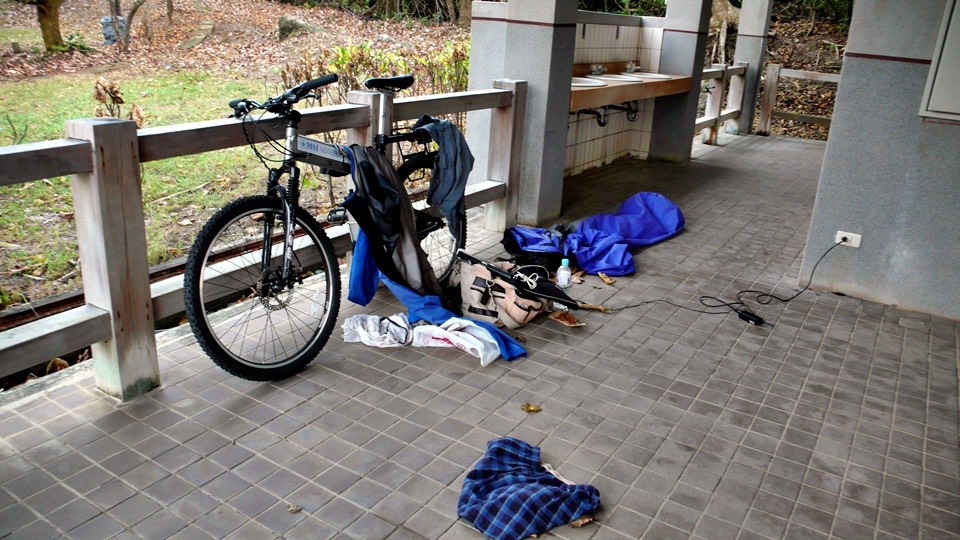
睡袋旁邊則是一大堆被強風吹過來的大片落葉，吹到我身邊之後就被卡住了，要是我在這邊連續睡上三天三夜，大概會被落葉給埋起來。
五點半的氣溫很舒適，溫度計顯示還有二十五度，完全不會冷，也不到會熱的地步。
收拾行李換裝的時候才發現，襪子掉了，昨天本來決定要睡在寺廟外頭，所以開始把車子當成衣架掛衣物。
可是之後又決定要換地方睡，結果掛在車架上的襪子就掉了，沒有襪子的連帶影響就是穿鞋子很不舒服。
既然如此，那就穿拖鞋吧，剛好從台灣最南點當作一個分歧，環島的前半圈穿球鞋，後半圈全程穿藍白拖騎車。
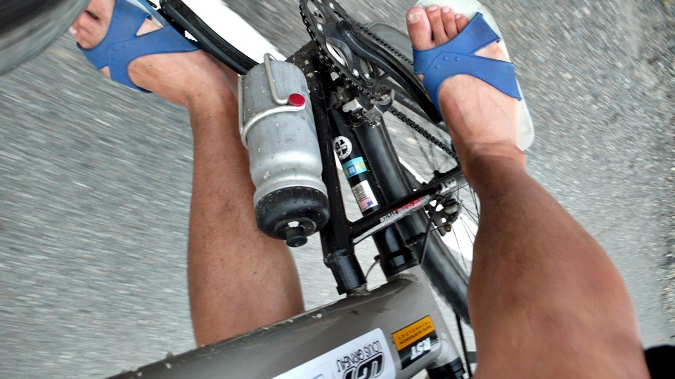
反正我本來就超愛穿藍白拖，穿這個環半島一定再舒適不過了～
只是要小心什麼東西都能弄不見的我，會不會把拖鞋也弄不見。
昨天夜裡黑漆漆，天亮之後景色看的一清二楚，找到了通最南點的指示牌，一路騎過去。
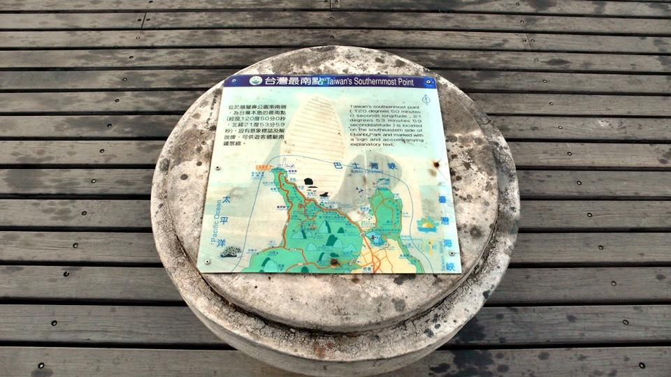
這個就是最南點的說明牌子，等到這邊之後，你不會有心思去看上面的說明文字，因為最南點的景色好漂亮呀～！
原來這邊看到的才是巴士海峽，上次在新竹那邊看到的是台灣海峽...不停的教壞台灣的小朋友@@"
最南點的地標是一個尖尖的、形狀有點像竹筍的水泥碑。
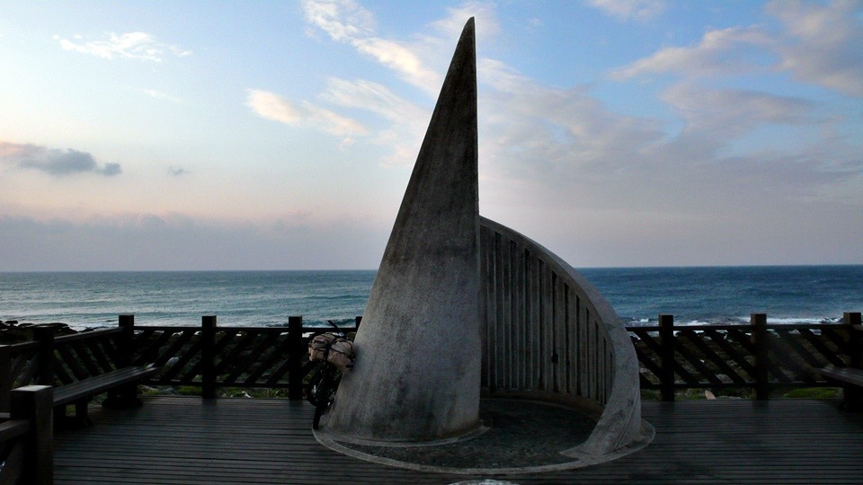
太陽已經離開海平面，很快就又被雲層給遮蔽住，現在大概是退潮吧，所以底下還能看到長滿貝殼的小石頭，漲潮的時候應該會淹掉。
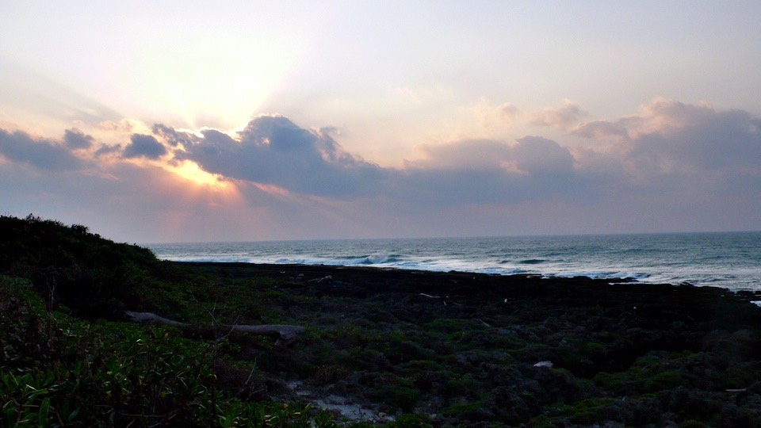
換個角度看最南點的風景，屏東可以舉辦一些游泳的活動，只要繞著恆春半島游泳，就可以一口氣跨越台灣海峽、巴士海峽跟太平洋。
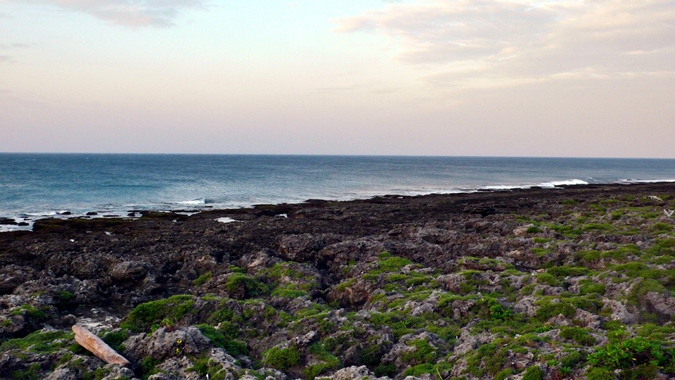
但是一口氣游這麼遠，大概會被海浪給捲走吧～
欣賞完最南點的景色之後，就要準備出發了，要從目前所在地的屏東騎到台東去。
昨天晚上到這裡時，黑得伸手不見五指，白天才看清楚昨天經過了些什麼建築物。
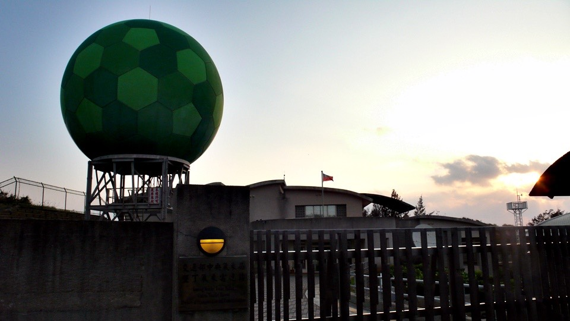
這個外頭有一顆超大綠色足球形狀物體的，就是墾丁氣象雷達站。
繼續騎昨天未完的台二十六線，從一出發就可以感受到強烈逆風的襲來。
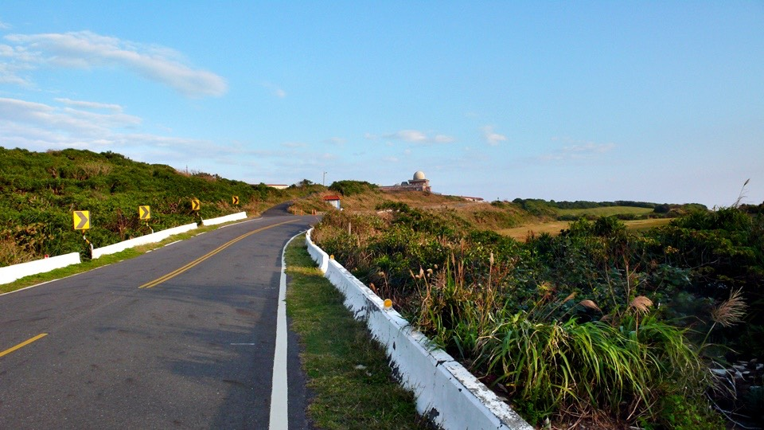
冬天的時候台灣會吹起東北季風，非常嚴重的妨礙了東半部的行程，接下來的五百公里都是龜速狀態，不論爬山還是平路都沒什麼差別。
趁著有太陽的時候拿出太陽能板來充電，這幾天陰了好久，一出太陽就曬傷，一塗防曬油就整天都是陰天。
這真是好美麗的海景，原來鳥瞰一個海灣是這麼樣的漂亮，台灣如此美麗，沒有全台玩遍遍之前，何必花大錢出國呢。
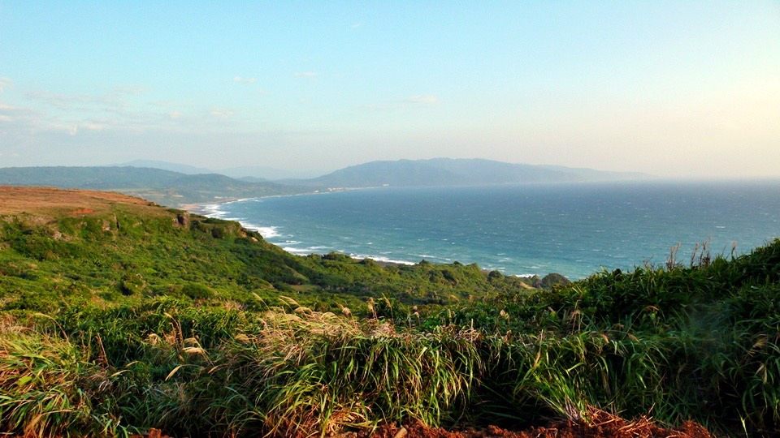
繞著半島騎的這一段路有很多的景點，路邊也會不時的出現說明介紹，除了可以了解目前的所在地之外，也可以吸收知識。
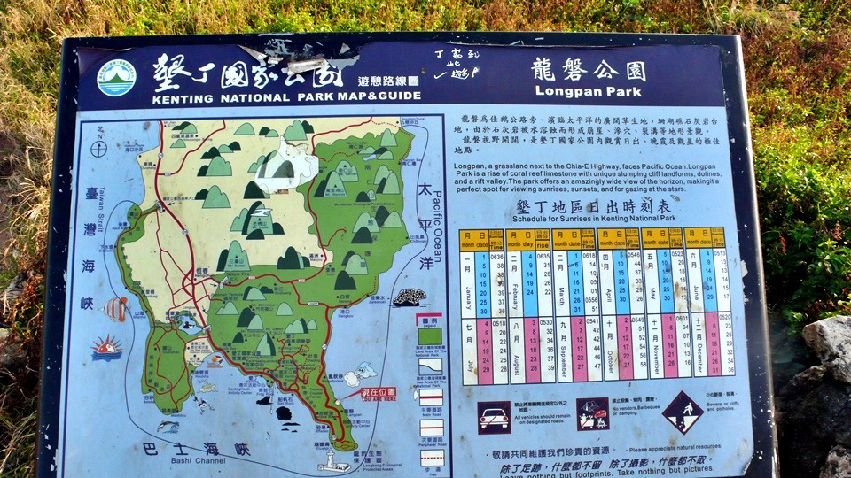
看著地圖中的『現在位置』，看來要騎到台東去，還是沒辦法一路沿著海走，因為到了旭海之後路就不通了，還是得走三分之一段的南迴公路。
這個牌子的最底下有一句話說的很好『除了足跡，什麼都不留；除了攝影，什麼都不取。』
跟大家共勉之呀，這邊的海灘真是一路上看過來最乾淨最漂亮的了，若不是因為遊客少，怎麼能保持的如此良好？
希望不要因為遊客增加連帶的就破壞了環境，大家一起發揮公德心愛護環境吧～
這是一個很有名的恆春半島景色，叫做風吹沙，本來沙子都在底下，就只是一個普通的沙灘，但是因為海風太大了，一路把沙子往山上吹。
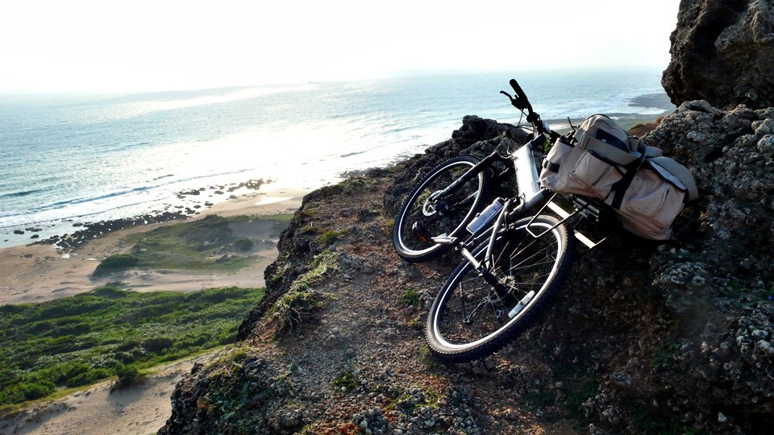
就變成你看到的樣子了，沙子在強風的吹拂之下，一點一點的往高處爬升。
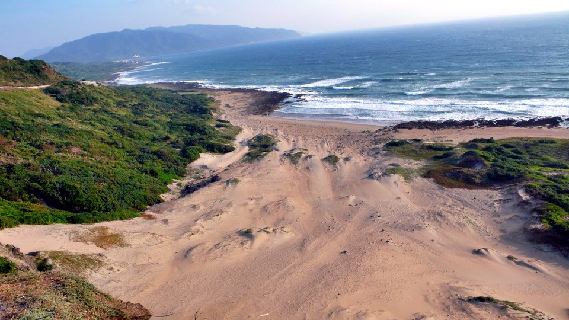
站在山頭上眼睛都會被大風刮起的風沙給弄得睜不開眼，真是名符其實的風吹沙。
海邊跟路面的高低落差大概有十層樓，可是經年累月之下，這一段路處處都是沙子。
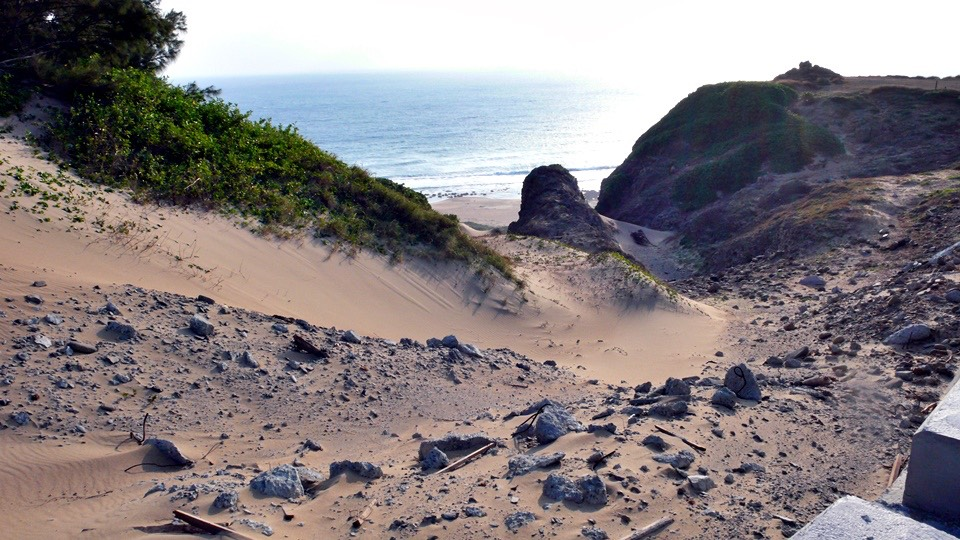
滿到路上來囉，真是一個好神奇的地方。如果一整年都不要有人經過這個地方，這條馬路一定會被沙子給埋掉。
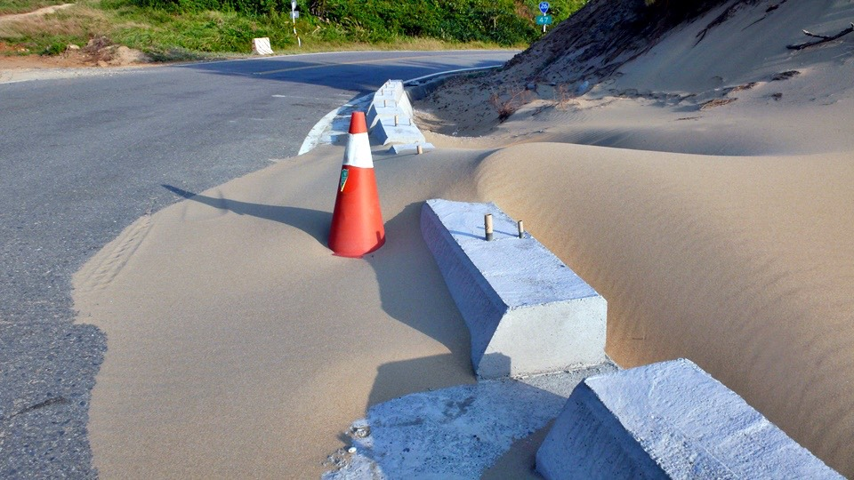
因為沙子的數量有點多，看起來就像是一個小小的沙漠，繼續往前走，就有一個佔地三百公頃的大沙漠，或者說是大沙灘。
要離開風吹沙之前回頭的最後一瞧，因為沒有任何的人跡，這個海岸看起來很像是無人島上陸的地方。
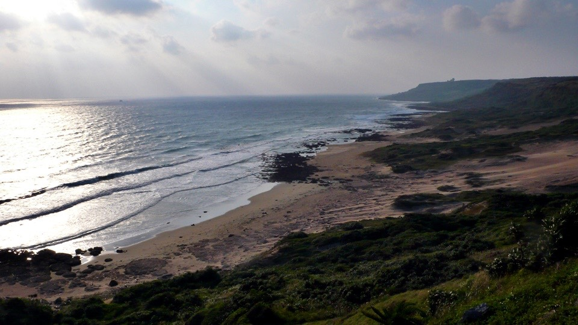
如果一整個夏天很無聊不知道要做什麼的話，可以到屏東的海邊來自導自演漂流到荒島的求生記，看可以獨立生活幾天。
就算不要這麼悽慘，帶足食物跟露營和烹飪的裝備，到海邊來住個幾天也是很過癮的，真想體驗一下海邊的BBQ。
東北季風沒有分什麼早上比較小，下午比較大，一整天下來都是狂吹不停，騎車速度被拖超級慢，還好風景很漂亮，不然肯定會賭爛到不行。
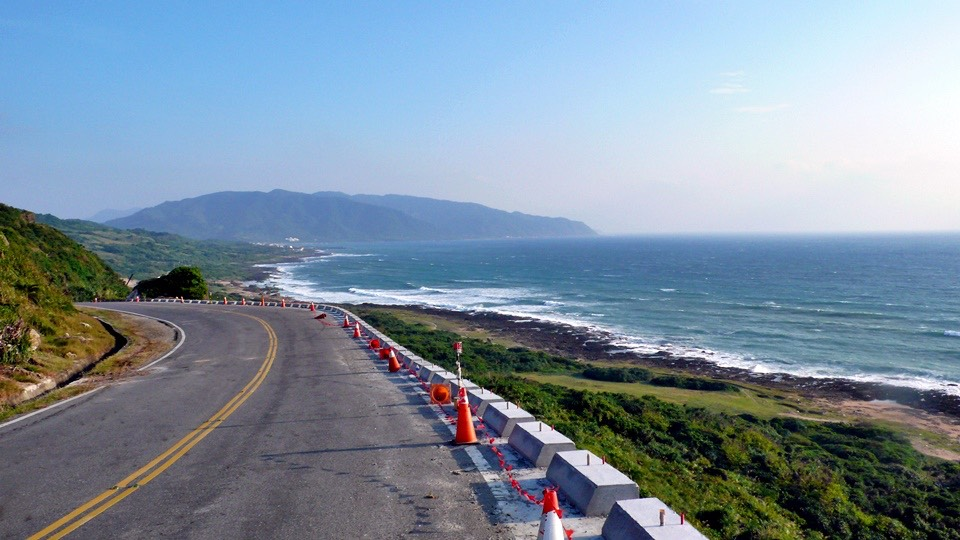
只是現在看海景覺得很漂亮，等明天或是後天看膩了之後，到時候逆風又繼續吹個不停，心情一定會大受影響。
本來計畫東台灣花四天左右騎完，但是評估過風勢的干擾之後，至少得多花上一天的時間才有辦法。
話說東北有三寶，人蔘、貂皮、烏拉草，這些跟台灣都沒關係，台灣只有很強的東北季風而已。
昨天看到台灣的黃牛，今天就看到台灣水牛，顏色是淺灰色，牛角微微向後彎，看起來很乖，沒什麼威脅性。
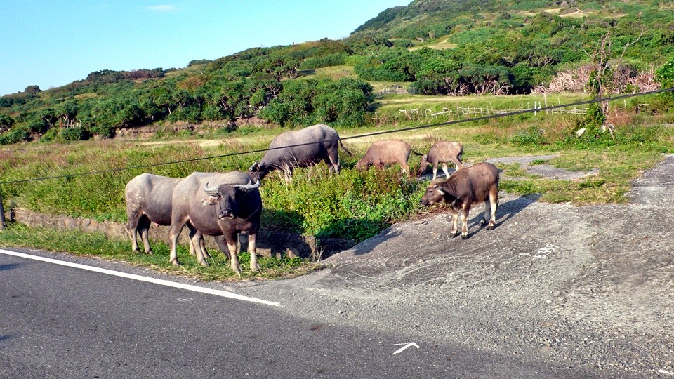
話說這一路上看過這麼多動物，其實只要比我大隻的，我都很想要騎騎看說。
日出的出海口，這條河水量就很驚人，因為是出海口的緣故，水質處於淡水跟鹹水之間，這樣的特色水域好像會有特殊的水產。
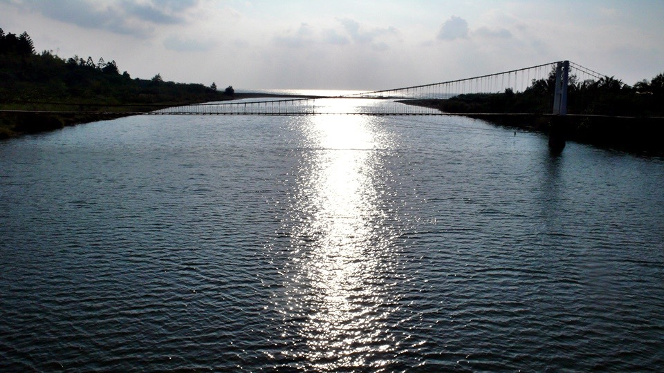
話說到東台灣之後，沿路都會經過大大小小的城鎮，大多也都有港口，想吃點新鮮又便宜的海鮮應該不成問題才是。
海邊暫時騎完了，回到一片大草原，等等要爬一小段的山路，然後才會繼續看到海景。
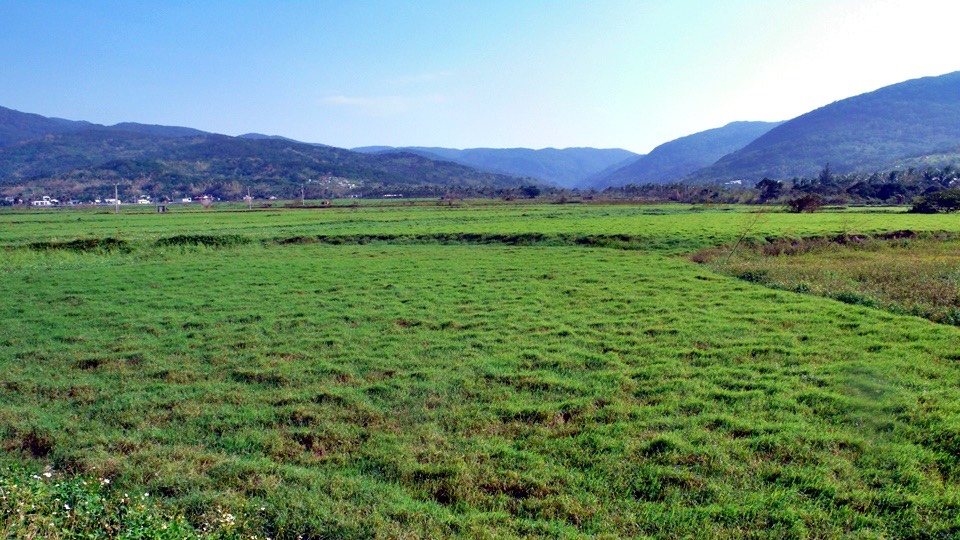
在國外都是耶穌基督的塑像，回到台灣就不一樣啦，金光閃閃的佛祖請現身～

在看了那麼多基督像，都已經見怪不怪習以為常，回台灣看到佛像感覺就很不一樣，環島的所見所聞更加有出國的新鮮感。
山路開始，咬牙切齒的爬坡，話說還好這次的行李帶的很少，負重比較輕鬆，爬坡就可以省點力氣。
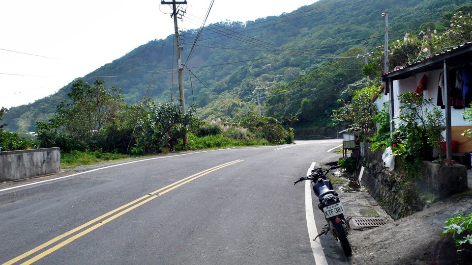
大概四年前，那時候還沒有單車環島，腦袋裡一心一意想的都是我要環島，我要環島，但是工具是機車。
行程跟計畫都想好了，最後還是決定不用機車，而是騎腳踏車。
原因很簡單，如果我騎機車環島一圈，那我這輩子大概不會想用腳踏車再環一次，只要想到這麼遠的路要用更辛苦的交通工具，整個人就很沒力。
一樣的事情用輕鬆的方式做過之後，要改用困難的方式再執行一次，最大的阻礙反而變成自己本身。
單車環島過之後，就覺得騎機車環島根本沒什麼呀，油門催下去車子就會跑，只是有生之年我還是想用機車環島一次。
接著大概是火車，然後公車，等臉皮比較厚一點，還可以挑戰撘便車。
氣喘噓噓的爬到山上，山腳下小小條的柏油路就是剛才經過的地方，從高處鳥瞰自己騎過的路都會覺得很不可思議。
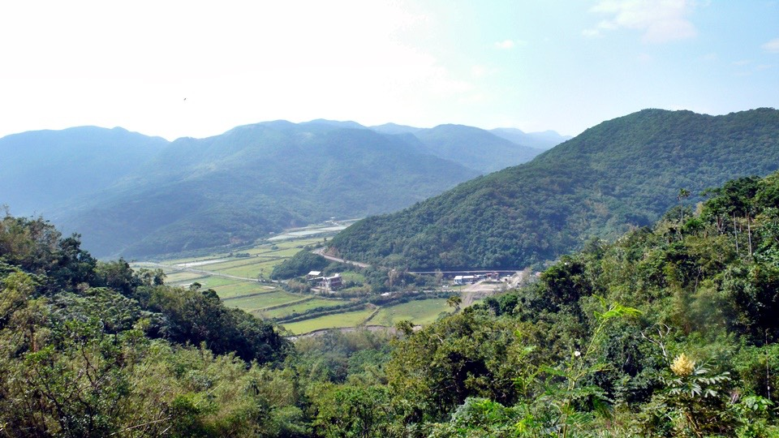
這邊山很多，只有一點點的平地可以耕種，所有的平地都毫不浪費的開墾成農田，稀稀疏疏的小鎮就是食物的補給點。
有一個地方叫做『港仔村』喔，這邊住的剛不會都是香港人吧(港仔)？
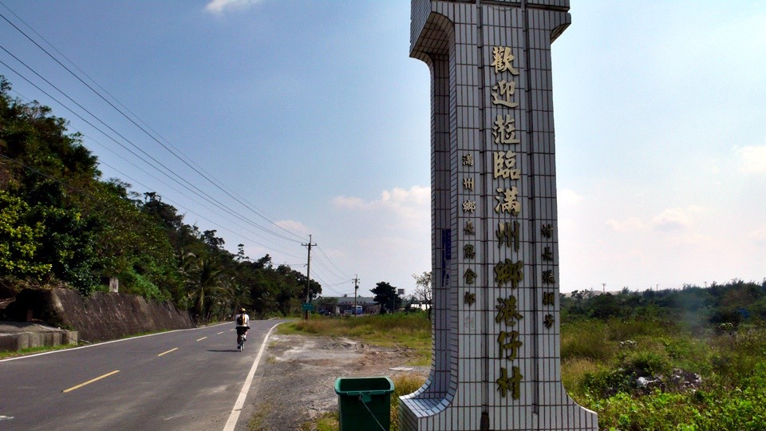
今天遇到很多騎單車旅行的人，西台灣騎單車的路線選擇很多，比較遇不到騎車的人，一到東台灣之後就不一樣了。
路就這幾條而已，怎麼騎都是會遇到，不是超過別人就是被超過，不然就是迎面遇上。
一開始有點怕被認出來，結果又是我自己在幻想，跟基隆廟口的滷肉飯老闆娘一樣，根本沒人知道我是誰～就算是騎單車的也不例外。
知道一切都是我想太多之後，整個人就輕鬆許多，不再看到騎車的人就緊張兮兮，大方的舉手打招呼，互相說聲加油的感覺真是很棒！
這一片是比風吹沙還要大上很多的沙灘，也是港仔村的特色，到這邊的遊客就比墾丁少很多，也許是因為非假日的關係吧。
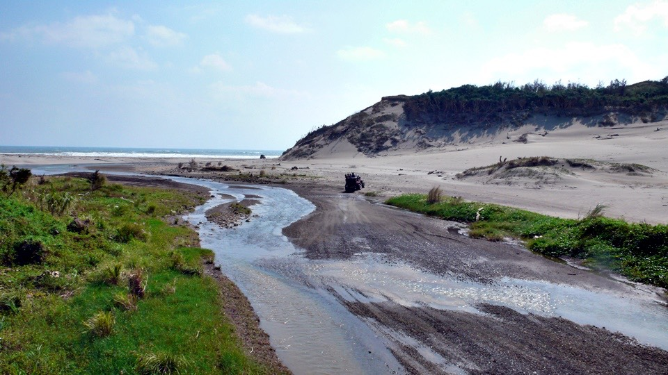
港仔村的特色就是沙灘車還有越野車，沙灘車可以自己騎，繞著沙漠賽車，不敢騎的話，也可以給司機用越野車載著跑。
從斜坡這麼衝進溪流裡，伴隨的當然就是女孩的尖叫聲～呀～呀～呀的叫個不停。
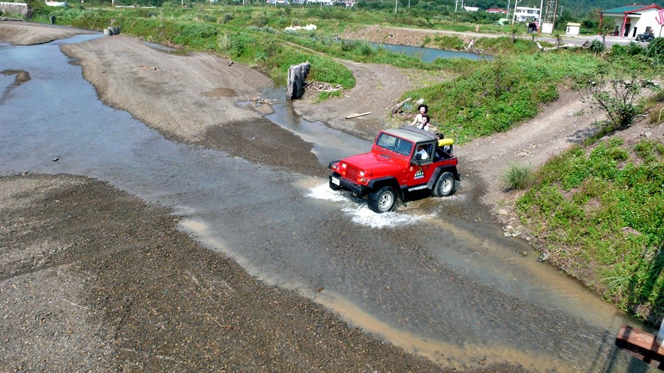
比基尼辣妹呢？
換一個角度看這個大沙灘，不要一直強調它是沙灘的話，的確是蠻像沙漠的，只要沙子的顏色再粗黃一點就更像了。
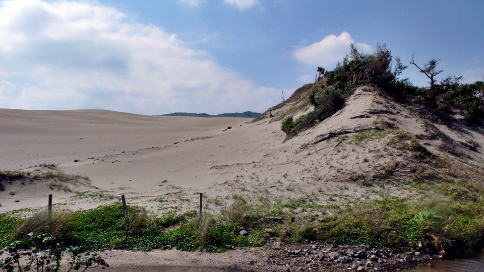
接著前面就大塞車，不知道是不是這麼巧，剛好遇到滿洲鄉的大拜拜，遊行隊伍是滿州鄉永靖村的羅峰寺，供奉的主神是觀世音菩薩。
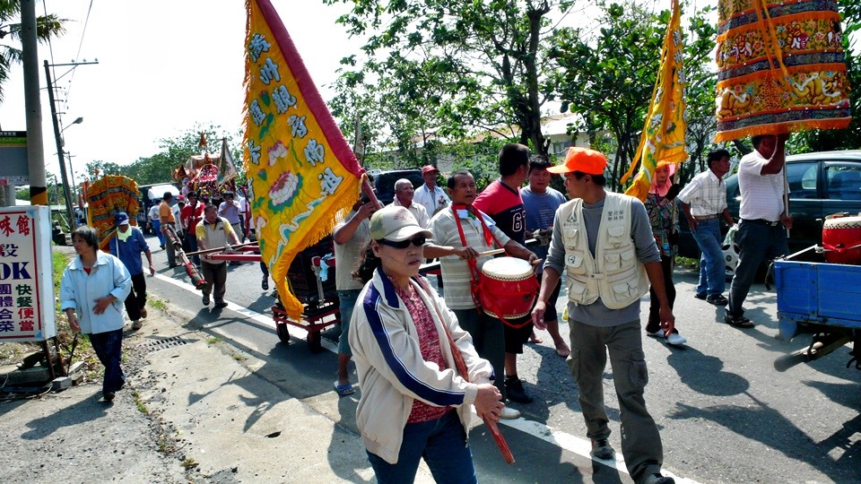
熱熱鬧鬧的拜拜隊伍好幾百公尺，鞭炮放個不停，意外的在這裡感受到有點熟悉又有點陌生的台灣風情。
只要靠海的地方，多多少少都會有個港口，停著數量不等的漁船。
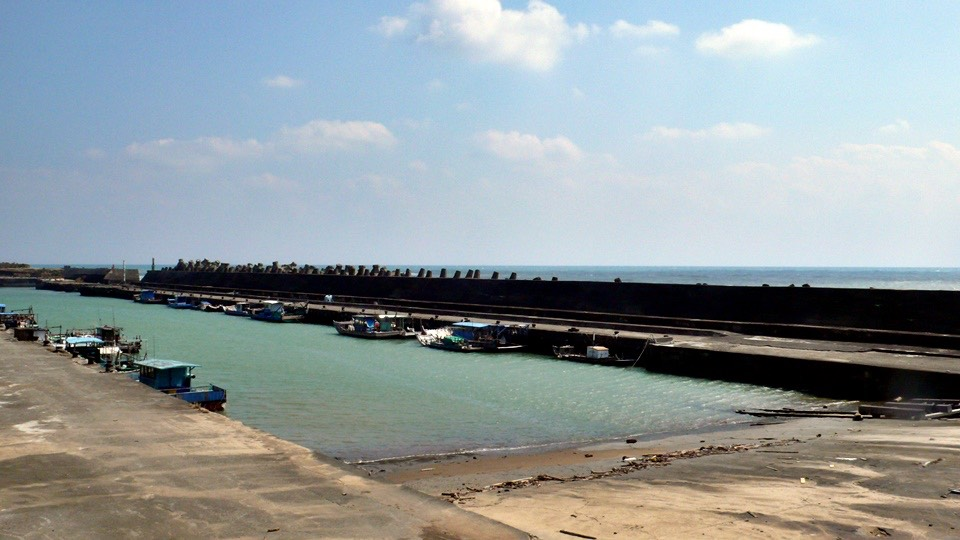
餐廳裡也會供應海鮮料理，像是『鮮魚湯』，每一家都在賣呀～但是用什麼『魚］煮湯就要看漁獲量而定，唯一能保證的就是很『鮮』。
小小漁港的出海口，小學課本有一句，『天這麼黑，風那麼大，爸爸打漁去，怎麼還不回家』，晚上拿著課本到這邊朗讀一定更有味道。
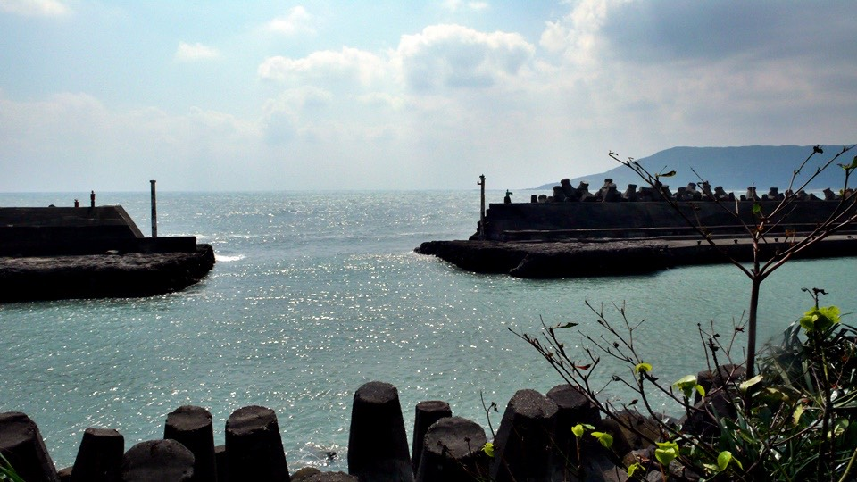
這一路上都是石岸居多，沙岸很少，岸邊有一堆的漂流木，不知道從哪邊漂流來的？
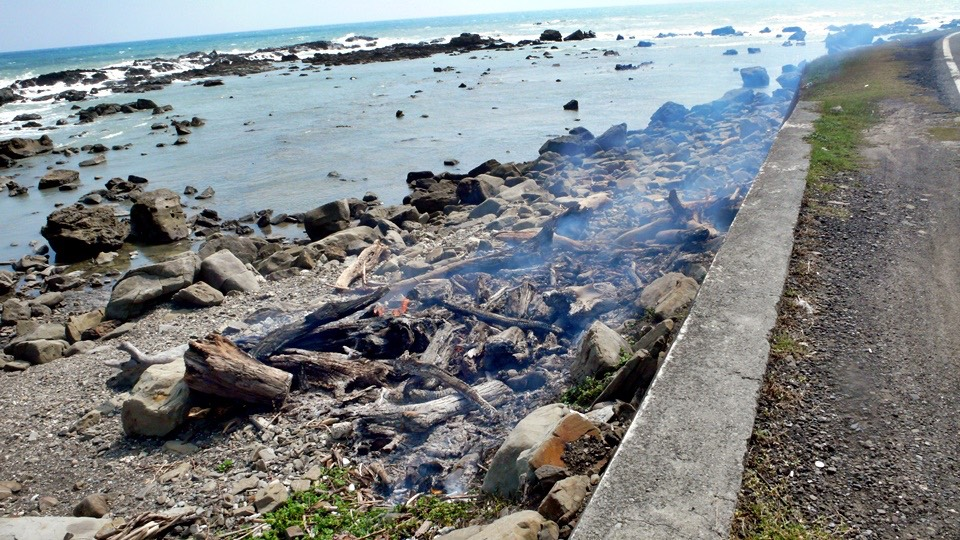
有無聊的人就把漂流木點火，配合風勢往南吹，搞的整條路都是濃煙，嗆鼻又刺眼，無比艱辛的渡過這段路。
過了這邊之後，停下車，爬過堤防，過去起火的地方想用尿尿把火給澆熄，可惜身體的水分都被汗水給消耗光了，心有餘而尿不足。
龍貓都用這個大大的葉子當雨傘喔，白天的天氣還那麼好，至少現在還可以看見太陽，希望等一下別變天才好。
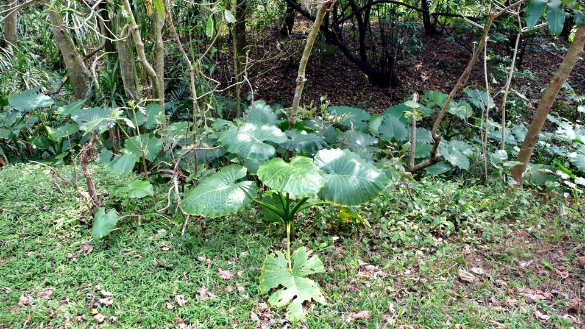
每次遇到不好的事情，就往好的方面想，然後安慰自己說，現在這樣算不錯了，還有更慘的呢，心裡就會好受一點。
不好受的就是那個『更慘』的事情真的發生了，比如說很冷的時候偏偏又下雨，肚子餓的時候偏偏又沒錢。
這時候就要再想說還有更慘的事情，現在這樣已經很好了，然後要暗自祈禱，這次不要又靈驗了。
話說這一條海岸線，有很多使用中的或是荒廢的軍事碉堡，看那迷彩綠的著色就知道是軍事用的。
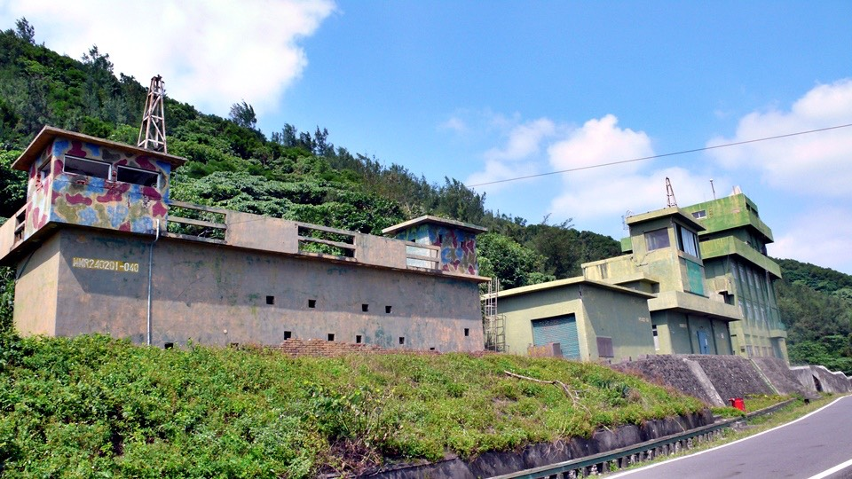
這沿路也經過幾個有憲兵站點的檢查哨，配合幾個阿兵哥檢查經過的車輛，騎自行車的當然就是免檢啦。
海浪不停的拍打的岸邊，靠近沙灘的海水都是灰色，因為不停的捲起海底的沙子所導致。
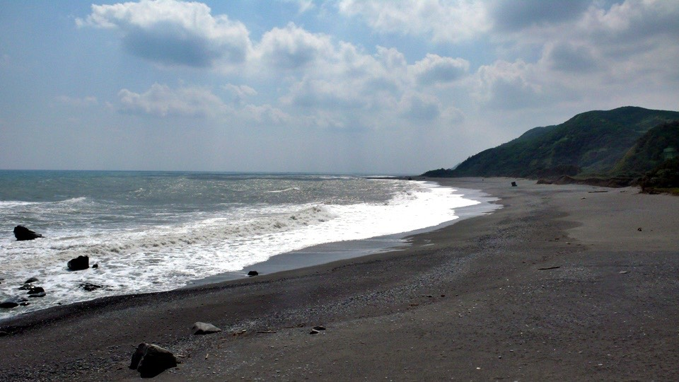
峭壁公路，很明顯是把山壁用機械破壞掉才有空間蓋馬路，旁邊一點點的地方就是大海，沒有多餘的空間。
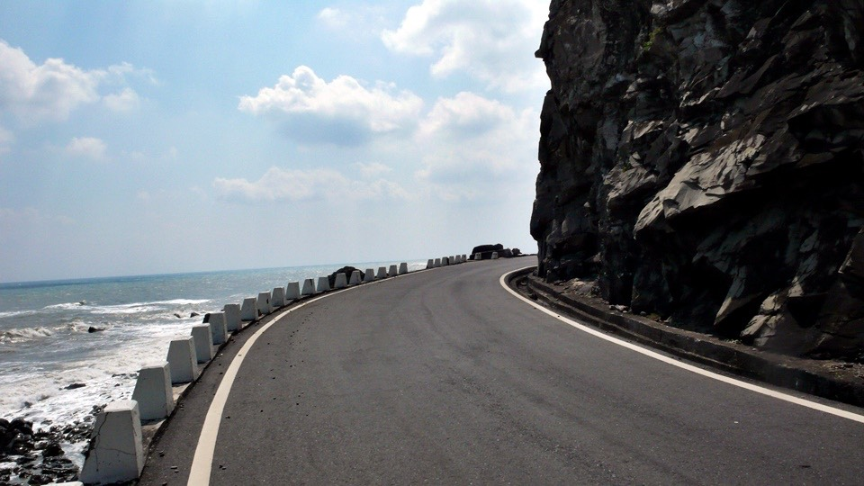
雖然是條省道，但是這一段很小條，馬路連中央的分格線都不用畫，想成是大條一點的單行道比較像。
海浪拍打在岸邊，捲起半天高的水花，然後被強勁的風勢四處吹散，騎在靠海的馬路，臉上都是海水。
抿一下嘴唇都是鹹的，眼睛也有點不太舒服，大概是沒戴太陽眼鏡的緣故。
話說這次環島很隨性，修車工具啥也沒帶，現在又穿藍白拖，太陽眼鏡也沒在戴，馬鞍包也沒有，錢也只有一點點。
我想降低一般人對於單車環島難度很高的印象，其實不用花什麼大錢，用很一般的裝備也可以完成環島，即使是一個人也行。
終於騎到旭海村了，四年前從台東那邊騎過來，看到警察局的牆壁上寫著『往旭海此路不通，回頭是岸』，
讓我一直覺得旭海是沒有路可以通往的地方，因為路都還沒建好，可是地圖上都會畫有路可以通，四年前是這樣，現在也是這樣。
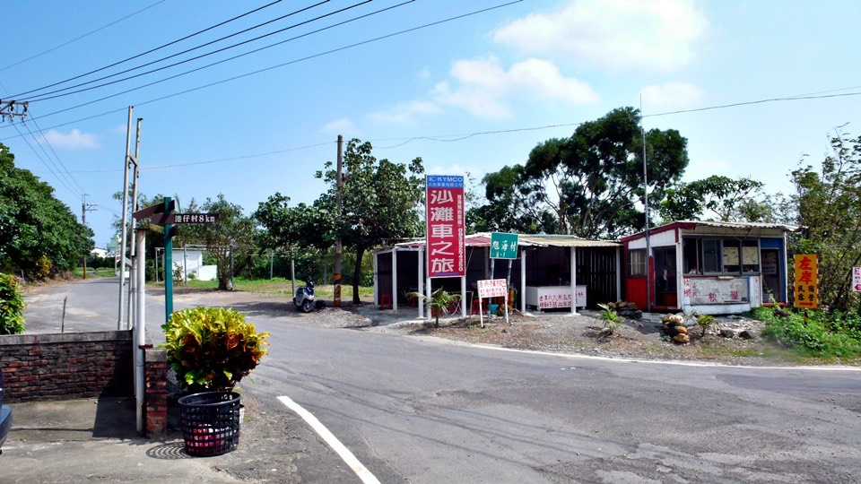
這個旭海村就是繞行恆春半島的最後一站了，接著要爬山騎回南迴，有點不甘心。
這條路的盡頭正好是一間警察局，完全不用客氣，直接去裡面問路跟喝水。
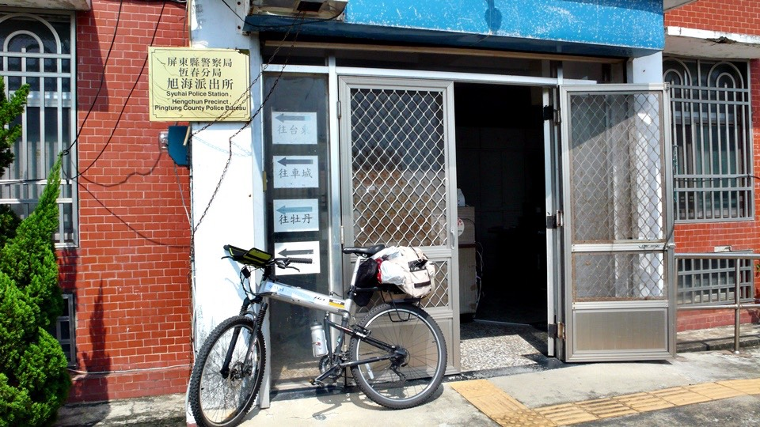
牆壁上貼著最新的地圖，雖然顏色都已經黯淡掉，還有很可愛的標語『開慢一點 小心山豬』
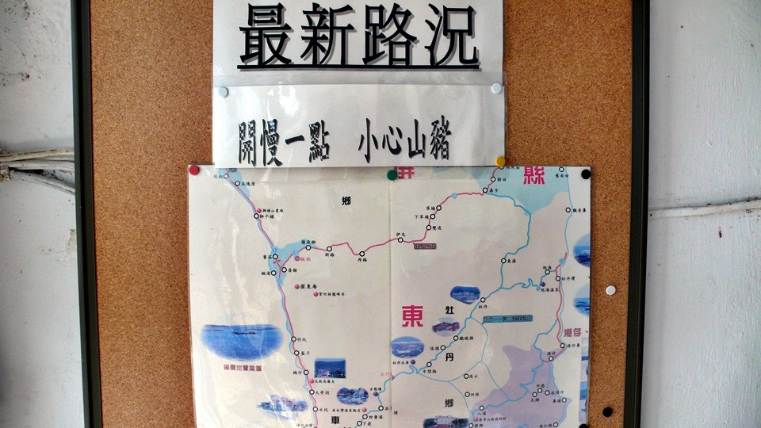
地圖上說，此路真的不通，警察伯伯也說，沒辦法，要接到南迴才可以往台東騎，所以就認命的去爬南迴吧～
話說旭海這邊有一間餐廳，外頭掛著很顯眼的招牌，寫著單車環島旭海站，裡面還有一塊板子，騎到這邊可以進去簽名留念。
從台二十六線變成騎一九九縣道，通往壽卡就是南迴的方向，而壽卡同時也是南迴的最高點，所以不僅避不開南迴，而且還得爬到最高的地方。
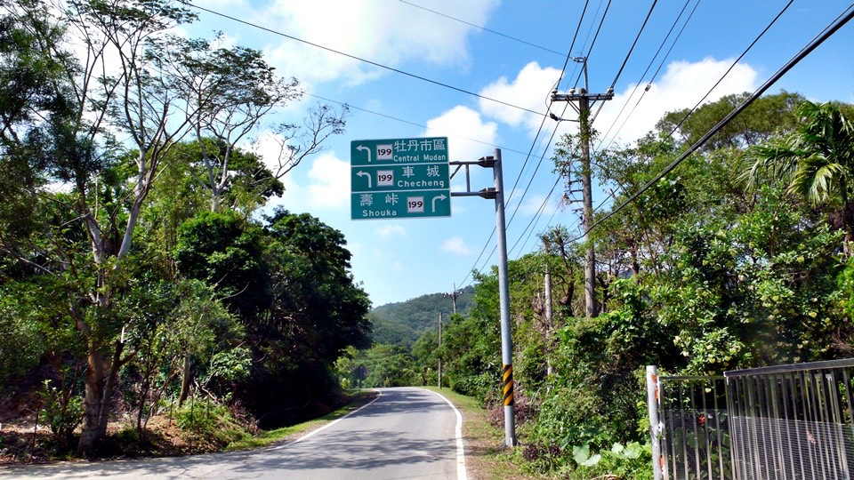
反正沿著海岸線走要被逆風吹的跟烏龜一樣慢，說不定躲到山裡面就不會有逆風來做亂了。
啊～這就是所謂的，自我催眠，把現在的處境扭轉成好的想法。
騎車休息的時候遇到的單車環島勇士，這一路上不停的我超過他們，然後我在路邊休息，換他們超過我，接著換他們休息，我又超過他們。
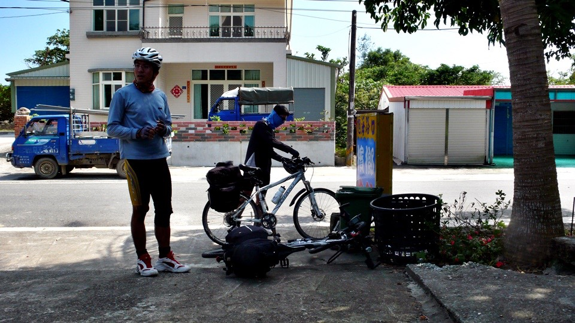
這次終於一起停在同一個地方休息了，他們裝備都蠻齊全的，車褲、不錯的單車和包包，相較之下我的裝備就很陽春。
對方問一句『你也是要環島嗎？』立刻肯定的知道他們不認識我，整個人鬆了一口氣，這樣就不用被參觀了。
休息的地方是個雜貨店兼檳榔攤，婆婆跟媽媽沒有在包檳榔，而是整理才剛採來一籠又一籠的山蘇。
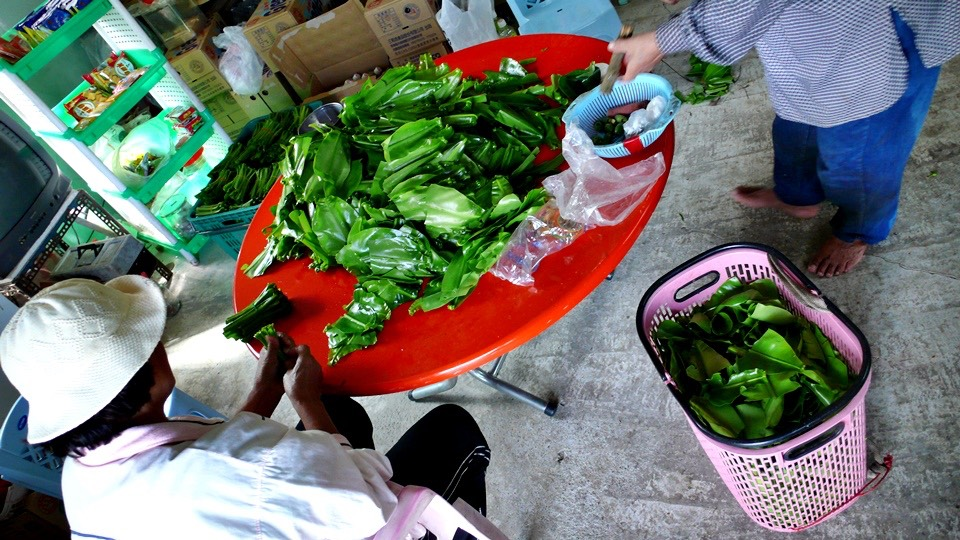
稍作休息之後我先上路，反正往台東的路就這麼一條，等一下一定又會遇到，騎沒多遠就經過這個可愛的東源村。
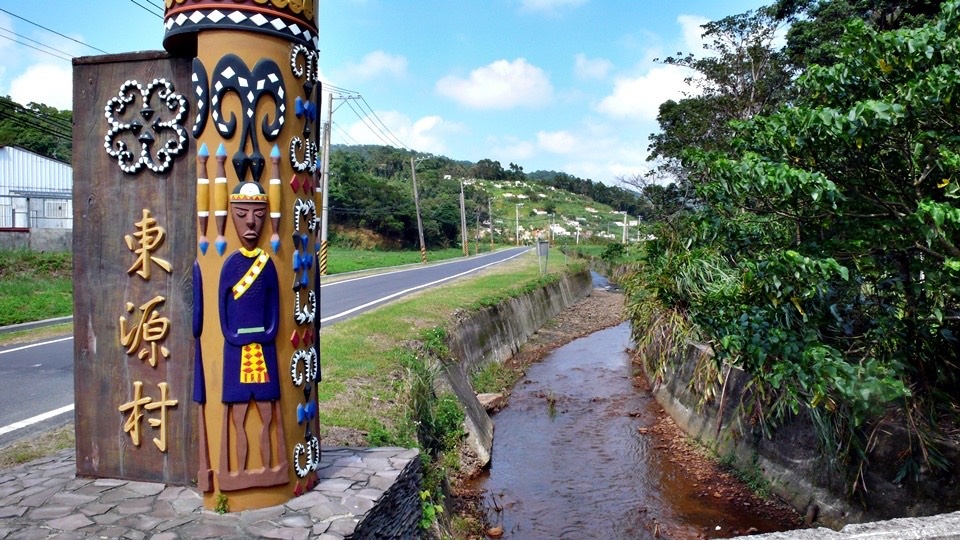
很有原住民同胞的風味吧？接下來很多鄉鎮都是這樣子的喔，感覺很有趣。
這一片綠色的田，上面開滿白色的小花，隨風搖曳飄散著淡淡的香氣，我想了好久終於想起來這是什麼花？
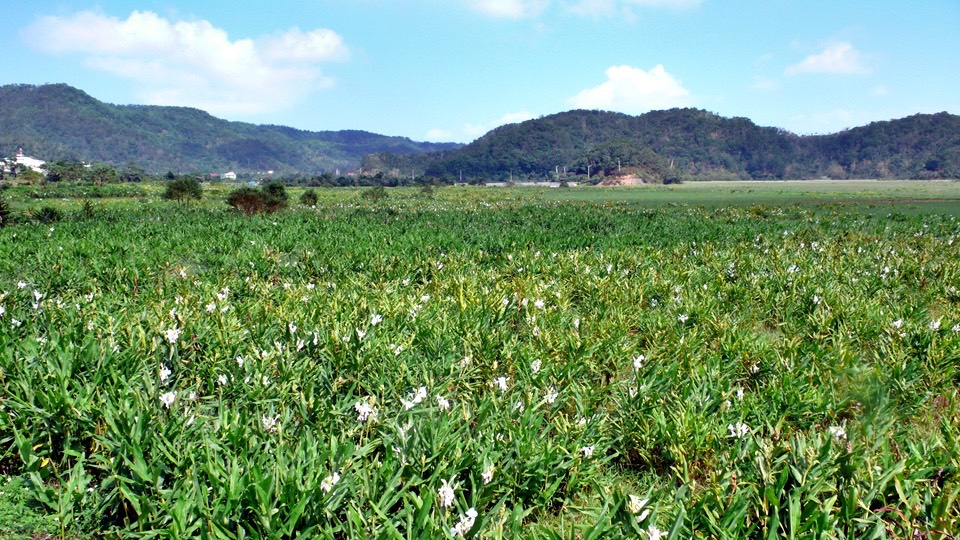
本來以為應該就是商店裡婆婆們摘的山蘇吧，錯！這些可是野薑花，以前去內彎玩的時候就有看過，難怪一直覺得很眼熟。
這個紅紅的就不知道是什麼花，搞不好小時候也有吃過，很有神農嚐百草的天份，所以長大之後腸胃很健康，吃什麼都沒問題。
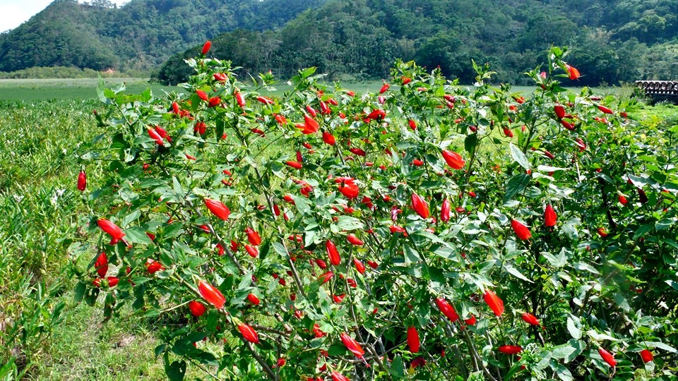
省道騎了好久之後，終於看到台九線的標誌了，這裡就是南迴公路啦，要是左轉就會騎到昨天那個楓港的路口，右轉乃台東是也。
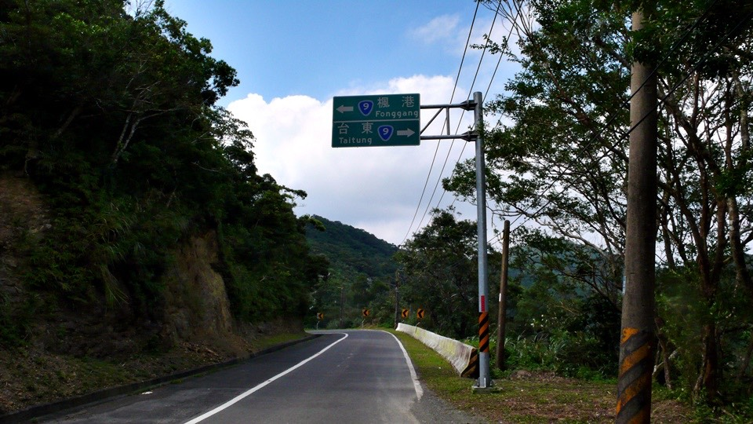
因為壽卡是最高峰的緣故，接下來一路都是下坡路段，一口氣可以很爽快的滑到達仁鄉。
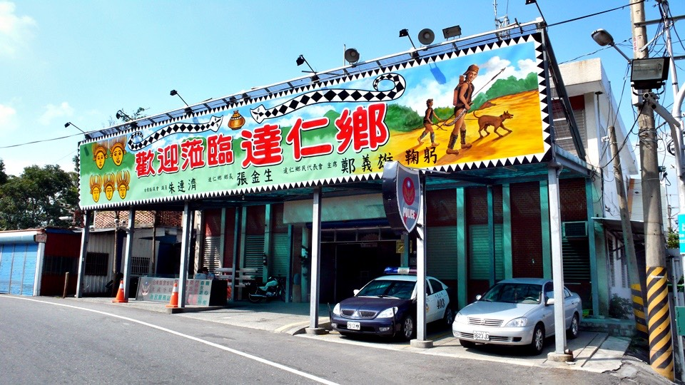
看著這個海報，我想說應該是餐廳吧，結果居然是警察局咧，連警察局都變得如此有趣。
這邊的警察大多也都是原住民，個性超開朗，而且很和氣，跟一臉奸詐的警察很不一樣，看過台東的警察之後，對警察的形象都會大改觀。
離開南迴公路沒多遠我的肚子就狂叫個不停，今天根本沒吃什麼正經的東西，早上又是爬山又是沿海，早就餓扁了。
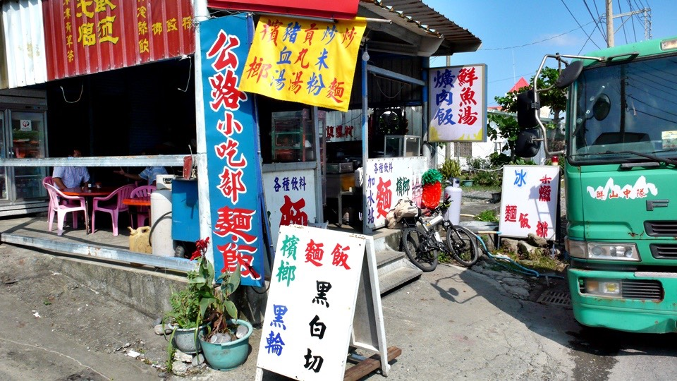
不知道為什麼挑了這一間很多大卡車司機停靠吃飯兼加水的小餐廳，大概因為運匠們都很清楚，好吃的東西在哪邊。
在這邊點了一晚礦肉飯跟鮮魚湯，魚湯不是海魚，而是虱目魚，沒差，好喝就好。
礦肉飯則是老闆娘拿給我一個大碗，要吃多少白飯自己裝。
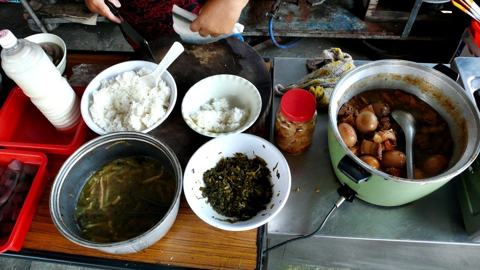
這還不算大方，接著打開幾個蓋子，筍絲、酸菜跟一大鍋的滷肉，都是隨便我想吃多少自己裝都可以。
對於餓扁的我來說，隨便裝根本就是吃到飽的同義詞。
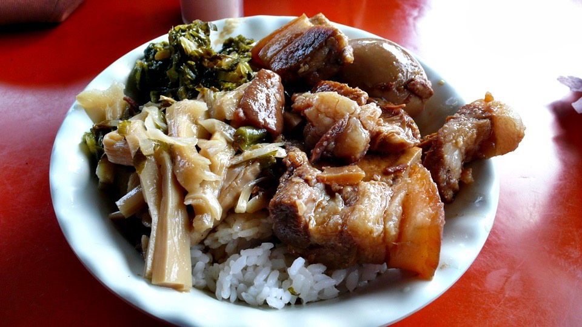
我裝了一大碗公的礦肉飯，夾了好幾塊看起來就好吃到不行的礦肉，還有滷蛋、魯豆乾，看到什麼就撈什麼，一碗也才四十元而已。
現在我住的新竹地區，一小碗滷肉飯就要價三十元，相比之下，這一碗四十元的豪華礦肉飯，根本就是便宜到不行。
配上這一碗新鮮的虱目魚湯，另外還有大瓶的冰汽水，全部吃下肚之後總算填滿了空虛的胃。
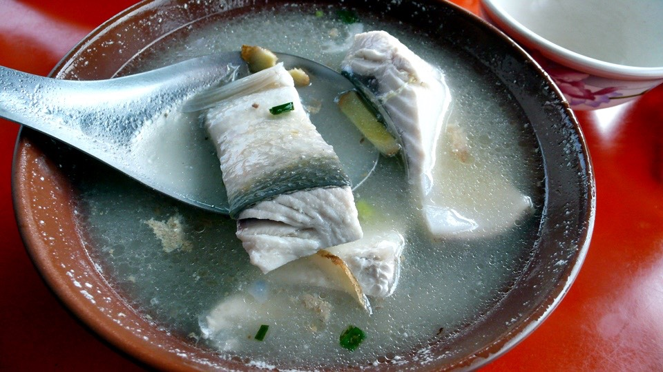
吃飽休息一下，吃太撐馬上騎車會消化不良，半小時後繼續頂著逆風往北騎車，今天目標是知本，也就是台東市，還有五十公里。
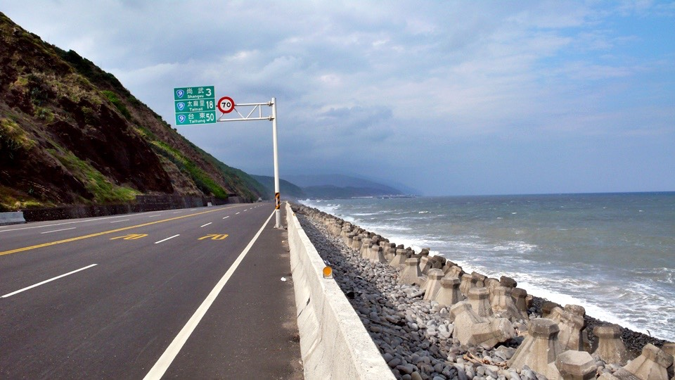
掐指算一下，平常來說只要三個小時就可以到，但是現在吹著大逆風，至少要四個小時以上。
而且本來以為到了東部就是蜿蜒平坦的海岸線，想不到餐廳老闆娘說這往台東的路上還要爬兩段山路。
所以這樣加起來，大概要五個小時才會到知本，不用說肯定又是天黑才能到。
另一個原住民氣氛的牌子，台東沿海的地名都很有趣，大武鄉大家應該聽過很多次，同樣的還有大鳥鄉，這個就沒聽過了吧。
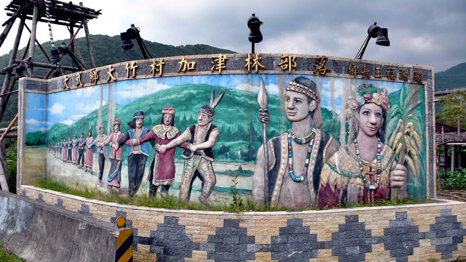
海景比我估計的還要快看膩，右邊看海看無聊的就換看左邊的山，兩邊都看膩了就專心的看著路面騎車看能不能撿到錢。
如預料中的，天色開始黑了還沒到知本，問路看離知本還有多遠？
答案是開車要半小時，依照常理換算成騎自行車的時間，就是四倍，兩個小時。
這個只是一般的小上坡而已，並不算在兩段爬山之中，幸好山已經爬完了，前面海岸線亮晶晶的地方就是台東市。
路上的汽車飛快的行駛著，限速只有七十呀，拜託開慢一點，這邊沒有路燈，騎起車來很恐怖的。
才六點而已就要摸黑夜騎，直到今天還是不習慣天黑的那麼早，拖著因為逆風而變得緩慢的步伐，總算踩進了台東市區。
這個路口就是接下來大約兩百公里的分叉抉擇點，左邊的台九線是俗稱的花東縱谷，右邊的台十一線則是沿海公路。
一但選了之後，幾乎就沒有換路走的可能性，而且兩條路會經過的鄉鎮完全不一樣，在這邊千萬要三思你想去的地方是哪裡？
花東縱谷比較有名的就是池上可以吃便當，瑞穗可以喝鮮奶，因為以前我有騎過一次，沿海公路有什麼我就完全搞不清楚了。
先進市區然後轉到知本的方向，回到四年前住過的民宿，熟悉的裝潢和擺設完全沒變，跟四年前一模一樣。
民宿老闆娘已經不記得我的臉，但是還記得我的名字，四年前因為躲颱風意外住進這間民宿，四年後再度來拜訪。
因為我媽媽叫我來這邊跟人家說謝謝，當時環島結束之後沒多久，就收到民宿老闆娘寄到我家的一大箱釋迦。
聽媽媽的話，我真的騎到了，還好昨天睡的很飽，不然今天一定沒辦法在逆風中騎這麼遠，露營一天之後又可以洗熱水澡，睡大頭覺。
現在可以好好睡覺的時候一定不熬夜，整個人哈欠連連的，寫遊記～？誰管它呀 zzzZZ
接下來還有好幾百公里的海岸線等著騎，騎得再怎麼慢，明天至少也可以騎進花蓮吧？不管了，先睡吧。
繼續閱讀：10.19 十字架庇祐